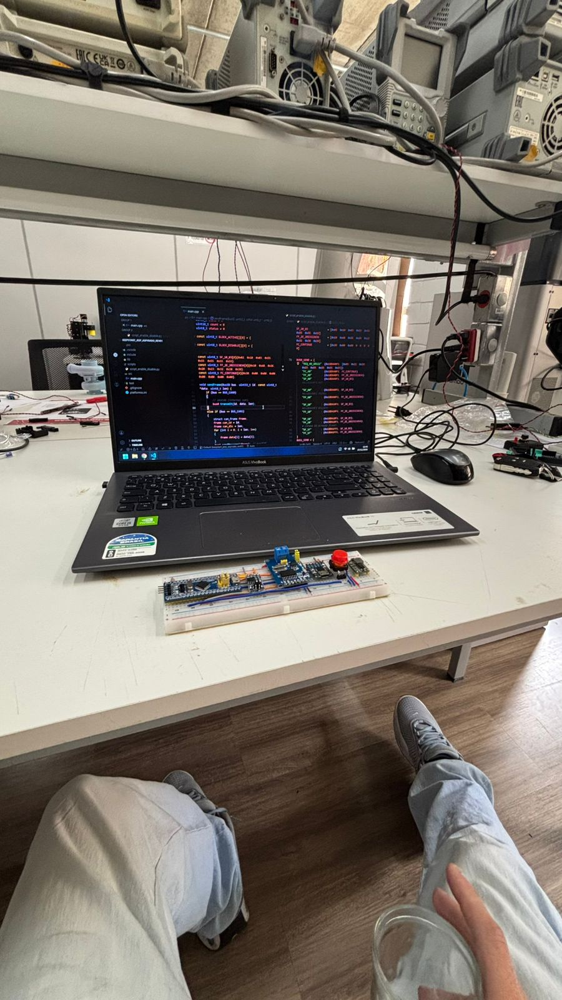

Sempre fui fã de carros, mas foi trabalhando com eles que entendi a tecnologia por trás de cada detalhe.
Sempre admirei carros pelo design, desempenho e engenharia. Com o tempo, essa paixão deixou de ser apenas admiração e passou a se tornar fonte de aprendizado constante.

Ao participar de projetos reais, conheci de perto módulos, eletrônica embarcada, leitura de sinais e software aplicado ao universo automotivo.
Cadastre-se para acessar a dashboard, participar do quiz e compartilhar sua paixão por carros e tecnologia.